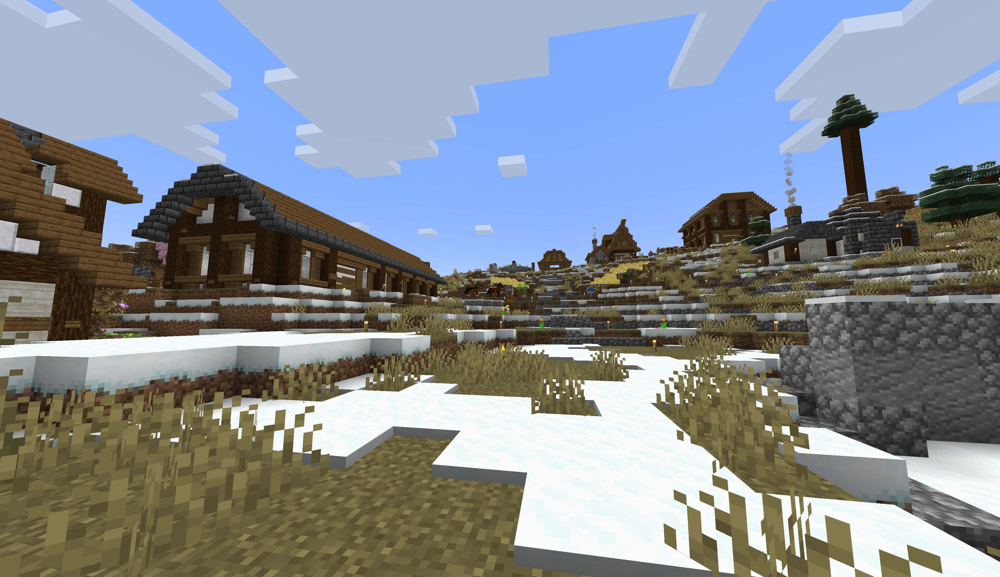

Останні Новини
Вестеншир опублікував відповідь Вогнешторму
28 Серпня 03:28
Вестеншир офіційно прийняв оголошення війни Вогнештормом.
Повна заява (перекладено з англійської): "Народе Вогнешторму! Нам жаль, що вам приходиться мати такого дурного царя. Я, та моя армія, займемось вирішенням цього питання. Коли ми виграємо у війні та звільнемо всі території Вогнешторму від тиранії царя, у вас буде справедлива та чесна влада.
Царю Вогнешторму. Ми з жалем повідомляємо Вам, що ми прийняли Вашу загрозу серйозно. Гнів держави "Westershine" обрушиться на Вас. Постарайтесь з усіх сил більше не робити помилок у назві Республіки Вестеншир. Ви програєте дуже швидко. Вас буде принижено так само, як і Ви принизили попереднього царя. Пам'ятайте про ці слова, коли будете падати на коліна."
Міжнародна реакція на цю заяву є позитивною: Республіка Негаре та Королівтсво Тригір'я підтримала наміри Вестенширу.
Поки-що ніяких бойових дій між двома державами ще не відбулося, як тільки з'явиться нова інформація з цієї війни, ми обов'язково опублікуємо її тут, тому слідкуйте за новинами.
Крайобраз Вестенширу
Вогнешторм розриває всі дипломатичні стосунки з Королівством Тригір'я
26 Серпня 12:25
У своїй новій заяві, Вогнешторм офіційно розірвав всі стосунки та відносини з Тригір'ям.
Повна заява: "Королівство Вогнешторм офіційно оголошує про розрив усіх дипломатичних відносин із Королівством Тригір'я. Це рішення прийняте на основі глибоких і незворотних розбіжностей, які не можуть бути вирішені дипломатичними засобами.
Крім того, ми оголошуємо про розрив "Угоди 74-го", яка більше не має сили і є недійсною. Всі попередні зобов'язання та домовленості, що виникли в рамках цієї угоди, анулюються.
Це рішення є остаточним. Будь-які подальші контакти між нашими країнами будуть розглядатися виключно в контексті нашої безпеки і інтересів."
Міжнародна спільнотя є надзвичайно стурбована такими заявами, так як вони по суті приближають всі держави до світової війни.
Розірвання угоди 47-го року
Вогнешторм оголосив війну Вестенширу!
25 Серпня 20:06
У своєму нещодавно опублікованому оголошенні, новий володарь Вогнешторму Ойген 2 оголосив війну Вестенширу.
Повна заява: "З жалем повідомляємо, що після ретельного обміркування та нездатності вирішити наші розбіжності мирним шляхом, королівство Вогнесторм прийняло рішення про оголошення війни королівству Westershine. Ми закликаємо обидві сторони дотримуватися всіх визначених правил ведення війни та проявляти повагу до ворога під час конфлікту.
Ми наполягаємо на тому, щоб бойові дії проводились із суворим дотриманням принципів честі та справедливості. Ми вимагаємо уникати насильства щодо цивільного населення, збереження майна та дотримання гуманних умов для військовополонених. Всі учасники повинні прагнути до мінімізації страждань і знищень."
Міжнародна спільнота стурбована такою різкою зміною зовнішньої політики Вогнешторму з приходом до влади нового царя.
Сама Республіка Вестеншир ще не опублікавала відповідь на заяву Вогнешторму.

Недавньо створена Кольорова Дивізія Вогнешторму
Переворот у Вогнегарді!
25 Серпня 15:42
Як повідомляють ЗМІ Вогнешторму, вчора, 24 серпня, у Вогнегарді стався стався державний переворот, у результаті якого до влади прийшов син колишьного царя Євгена 1 Драконобора, Ойген 2.
Армія та Церква Вогнешторму вже признали нового правителя.
Відомо, що переворот стався за ініціативи Цервки Вогнешторму через надвисокі податки, які встановив попередній царь. Детальніше про переворот можна подивитись в фільмі, знятому свідками перевороту.
Реакція інших держав світу поки-що є нейтральною.

Фотографія Ойгена 2 після коронації
© 2024 Flopia Community All Rights Reserved